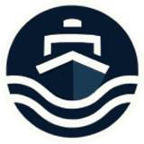

Connecting policy, industry and society
across Europe's seas — from shipping and
logistics to blue security and offshore energy.
Europe's maritime ecosystem is fragmented. Policy, industry, defense and innovation operate in silos — while the risks and opportunities are system-wide. We bridge that gap. Founded in 2023, first EU funding applications launching in 2026.
EU Transparency Register–registered, fully governed, editorially independent — a credible institutional voice for European maritime affairs.
Shipping, ports, supply chains, coastal tourism, fisheries and aquaculture at the economic heart of everything we do.
Active in Brussels, at European Maritime Day and beyond — building a reusable network for EU proposals and high-level convening.
Blue Economy + Blue Diplomacy + Blue Security. We convene stakeholders, produce credible knowledge, and build EU-funded project consortia across the full maritime system.
Officially registered European NGO — Brussels-based, editorially independent.
EU regulation, maritime law, standards, advocacy and stakeholder alignment across European institutions and member states.
Shipping, ports, supply chains, coastal tourism, fisheries and aquaculture — the economic engine of the maritime sector.
Geopolitics, sea-lane security, seabed infrastructure protection, hybrid threats and maritime cyber resilience.
Offshore renewables, alternative fuels, AI for maritime, monitoring systems and responsible ocean resource management.
From community-building to EU project catalysis — we operate across the full maritime innovation cycle.
Members, working groups, expert directory, newsletters and partner matchmaking across the maritime ecosystem.
Briefs, explainers, interviews and event reports — fast, referenced and readable. 1–2 publications per unit before launch.
Concept notes, consortium building, proposal writing and pilots for EU-funded projects (Horizon, Mission Ocean).
Trust-building and repeatable collaboration formats across three spheres.
Join as member, partner or expert — help shape the future of the Blue Century.
Join our community of organisations shaping EU maritime policy.
Author, reviewer or speaker in your area of expertise.
Co-design a project concept for EU funding calls.
Support our flagship event with full transparency safeguards.